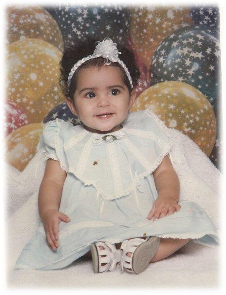

About me
Charline Galarza

I am 22 years old and I was born on August 6,
1997 in Puerto Rico. I was born and raised in Puerto Rico and moved here to Texas in 2011. I am billingual but the language that I speak at home is Spanish.
Also, here is a picture of when I was a baby.
↓ ↓ ↓ ↓ ↓ ↓ ↓ ↓ ↓ ↓ ↓ ↓

My family
Furthermore, I am the youngest of a family of 5. My dads name is Carlos Galarza and my mothers is Annette Valentin. I have two older sisters, the eldest is Jacqueline Galarza and the other is Karyann Galarza.
This is a fairly old picture of our family but I had trouble finding a more recent one. Anyways, my parents are the two on the left and my eldest sister Jacqueline is the one that is next to me with the long black hair and bangs and Karyann is the one sitting in the middle with the bangs and short blonde hair.

My friends
My best friend
My best friend's name is Amberand she is a little older than I am but it doesnt matter because she is like a sister to me. I met her when I first moved to Texas and we clicked since the first time we ever spoke. Since then we have been inseperable and we have been through it all together. A few years ago she moved with her husband to Canada and lived there for a couple of years and now she lives with him and her family. Although, she isn't physically here with me we are always there for each other and anytime I have a problem I know I can always count on her.
My friend
Another close friend of mine that does live here is called Cassandra. We have sleepovers a lot and we hang out as much as we are able to. Sometimes in between our classes we meet up to chill together. She is really funny we joke a lot together, especially when we watch movies somehow we always make a joke out of everything. However, if the moment comes to it we can always talk seriously as well, which is nice. She is one of the first people I met when I moved to Texas as well. Amber, Cassandraand I all went to high school together. So we all know each other and talk to each other, which is awesome.